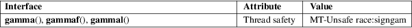

gamma, gammaf, gammal − (logarithm of the) gamma function
Math library (libm, −lm)
#include <math.h>
[[deprecated]]
double gamma(double x);
[[deprecated]] float gammaf(float x);
[[deprecated]] long double gammal(long double
x);
Feature Test Macro Requirements for glibc (see feature_test_macros(7)):
gamma():
_XOPEN_SOURCE
|| /* Since glibc 2.19: */ _DEFAULT_SOURCE
|| /* glibc <= 2.19: */ _BSD_SOURCE || _SVID_SOURCE
gammaf(),
gammal():
_XOPEN_SOURCE >= 600 || (_XOPEN_SOURCE &&
_ISOC99_SOURCE)
|| /* Since glibc 2.19: */ _DEFAULT_SOURCE
|| /* glibc <= 2.19: */ _BSD_SOURCE || _SVID_SOURCE
These functions are deprecated: instead, use either the tgamma(3) or the lgamma(3) functions, as appropriate.
For the definition of the Gamma function, see tgamma(3).
*BSD
version
The libm in 4.4BSD and some versions of FreeBSD had a
gamma() function that computes the Gamma function, as
one would expect.
glibc
version
glibc has a gamma() function that is equivalent to
lgamma(3) and computes the natural logarithm of the
Gamma function.
See lgamma(3).
See lgamma(3).
For an explanation of the terms used in this section, see attributes(7).

None.
SVID 2.
Because of historical variations in behavior across systems, this function is not specified in any recent standard.
4.2BSD had a gamma() that computed ln(|Gamma(|x|)|), leaving the sign of Gamma(|x|) in the external integer signgam. In 4.3BSD the name was changed to lgamma(3), and the man page promises
"At some time in the future the name gamma will be rehabilitated and used for the Gamma function"
This did indeed happen in 4.4BSD, where gamma() computes the Gamma function (with no effect on signgam). However, this came too late, and we now have tgamma(3), the "true gamma" function.
lgamma(3), signgam(3), tgamma(3)